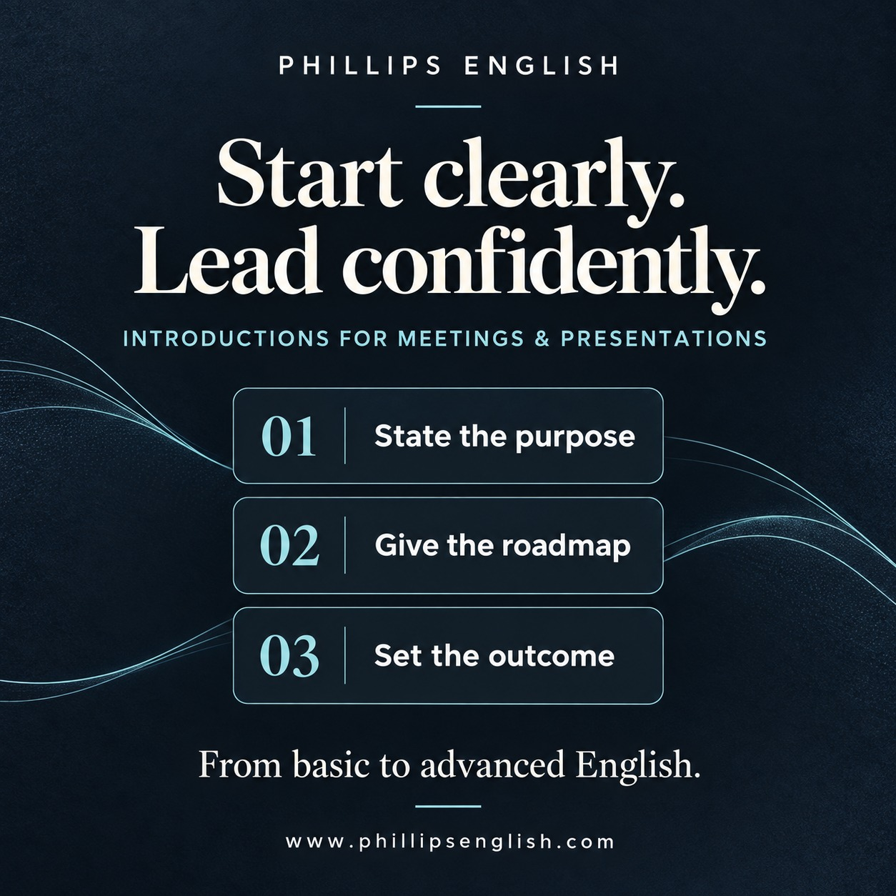

Explain why you are speaking, what you will cover and what you want to achieve. That structure helps listeners follow the discussion from the start.
Introduce yourself when needed
If people do not know you, give your name and your role before the agenda. For example: “Good morning. I’m Alex, and I’m leading the project team. Today, I’ll take you through our progress and the decisions we need to make.” Keep it relevant and brief.
Five levels of introductions
These are examples of increasing language complexity, rather than formal exam-level classifications. Choose the wording that suits your audience and purpose. An experienced speaker can use a simple introduction effectively.
Basic
Meeting: “Hello everyone. Today we’re talking about the new project. Let’s start with the plan.”
Presentation: “Hello everyone. Today I’m going to talk about our new project.”
A clear greeting and topic. Suitable for a short, straightforward opening.
Developing
Meeting: “Thanks for joining. First, we’ll review our progress. Then we’ll discuss the next steps.”
Presentation: “Thanks for coming. First, I’ll explain the problem. Then I’ll show you our solution.”
First and then give listeners a simple roadmap.
Intermediate
Meeting: “The purpose of today’s meeting is to agree on our next steps. I’ll outline the main issues before we open the discussion.”
Presentation: “The aim of this presentation is to explain our findings. I’ll begin with the background, then discuss the results, and finish with my recommendations.”
Name the purpose and order. In a meeting, explain when discussion will begin.
Advanced
Meeting: “Today’s discussion will focus on aligning our priorities and evaluating the options available. By the end, we should have agreed on a clear course of action.”
Presentation: “I’ll walk you through the key findings, assess their implications for the team, and set out the recommendations that follow.”
Useful for decisions and recommendations. Aligning priorities means agreeing on what matters most; implications are the possible effects or consequences.
Extremely advanced
Meeting: “Before we examine the proposals, I’d like to establish a shared frame of reference, distinguish our immediate priorities from our longer-term objectives, and make explicit the assumptions underpinning our recommendations.”
Presentation: “To put the recommendations in context, I’ll first outline the rationale behind our approach, examine the trade-offs involved, and explain how the evidence informs our proposed course of action.”
Use this when a complex topic needs shared context. A frame of reference is a shared basis for understanding; underpinning means forming the basis of something. Rationale means reasoning, and trade-offs are the compromises between competing benefits.
Why introductions help the flow
A clear purpose helps people understand why each point matters. A roadmap tells them what to expect. An expected outcome—such as agreeing on next steps—helps a meeting stay focused.
Introductions also let you explain participation. In a collaborative meeting, invite questions as you go. For a timed presentation, you might say: “I’ll leave five minutes for questions at the end.” Choose an arrangement that fits the situation.
Connect the points as you go
Basic transitions
“First, let’s look at…”
“Next, we’ll discuss…”
“Finally, let’s review…”
Intermediate transitions
“Now that we’ve covered the background, let’s look at the results.”
“That brings us to the next point.”
“Before we move on, are there any questions?”
Advanced transitions
“With that context in mind, let’s turn to the implications.”
“Building on that point, I’d like to consider an alternative.”
“Having weighed the options, we can now examine the trade-offs.”
Make the connection accurate. Use “building on that point” when you genuinely extend the previous idea. If you are changing topic, say so clearly.
Close with the outcome
For a meeting: “To summarise, we’ve agreed on the deadline and assigned the next steps. I’ll send a written summary this afternoon.”
For a presentation: “To conclude, the evidence supports a small pilot before a wider launch. My recommendation is to begin with one team.”
Practise your own opening
- Choose a real meeting or presentation you are preparing for.
- Write a 30-second opening with your purpose, roadmap and intended outcome.
- Add two transitions that connect your actual topics.
- Say it aloud and record it. Check whether the structure is easy to follow.
- Try a simpler version and a more advanced version. Choose the one you can deliver clearly and naturally.
How we practise at Phillips English
In my lessons, we rehearse your actual introductions, meeting contributions and presentations. You receive feedback on wording, pronunciation, pacing and delivery, then practise the revised version. The aim is to make the language usable when you need it.